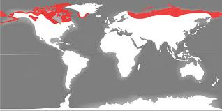

Raksturojums
Tundra ir bezmežu dabas zona, kas izveidojusies subarktiskajā joslā.
Kopskats

Ģeogrāfiskā izplatība
Tundra ir iekrāsota ar sarkanu.Klimats
Vidējā gada temperatūra svārstās no -12°C līdz 0°C. Nokrišņu daudzums ir mazāks par 250 mm gadā, lielākoties sniega veidā. Tundrā ziemas ir garas un aukstas (8 mēneši), bet vasaras – īsas un vēsas. Lai gan nokrišņu ir maz, augsne ir pārpurvojusies.
Augsnes
Dzīves apstākļi ir ļoti skarbi, jo šī ir vissaukstākā bioma. Tundrā ir daudz purvu un ezeru. Augsnes ir ļoti nabadzīgas. Koki šeit neaug, taču ir daudz dažādu puskrūmu, ķērpju un sūnu.
Raksturīgākie augi

Raksturīgākie dzīvnieki
Cilvēki nodarbojas ar briežkopību, zveju, medī vaļus un roņus. Te dzīvo ziemeļbrieži, muskusa vērši, polārzaķi, polārlapsas, peles, Kanādas aļņi, ligzdo putni un ir daudz dažādu kukaiņu.

Cilvēku nodarbošanās
Cilvēki tundrā nodarbojas ar ziemeļbriežu audzēšanu un iegūst derīgos izrakteņus – naftu un dabasgāzi. Cilvēki tundrā dzīvo krasta zonā.